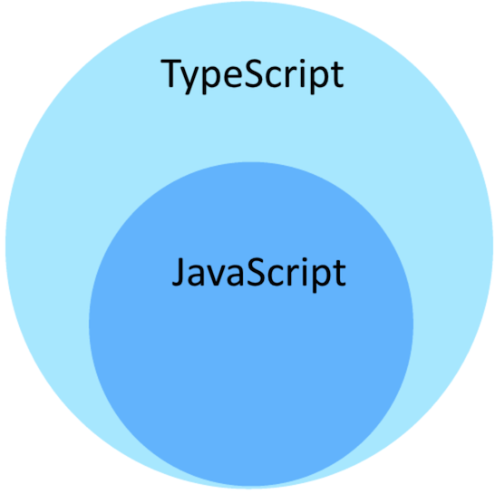
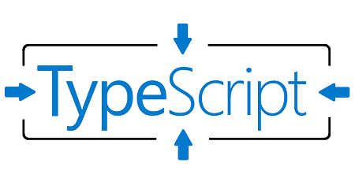
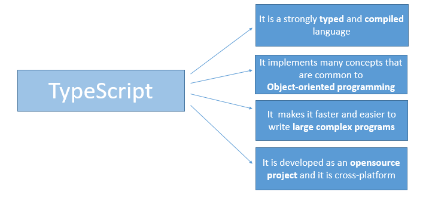

TypeScript is a language developed and maintained by Microsoft. It is a strict syntactical superset of JavaScript, and adds optional static typing to the language.

Features of TypeScript:
- TypeScript is just JavaScript
- TypeScript supports other JS libraries
- JavaScript is TypeScript
- TypeScript is portable
Why Use TypeScript?


Components of TypeScript